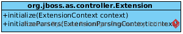

com.acme.corp.tracker.extension.TrackerExtensionExtension 实现
WildFly 中的任意一个 subsystem 都必需对应一个 Extension 实现,

Extension 实现必需遵循如下规则:
-
Extension 实现类的构造方法不能有参数
-
Extension 实现类应的类加载 Module 必需包含一个 META-INF/services/org.jboss.as.controller.Extension 文件，并且该文件内容为Extension 实现类，参照代码-1
-
WildFly 配置文件中必需有 extension 的相应配置，且 extension 的 module 属性指向 Extension 实现类对应的类加载 Module，参照代码-2
-
initialize() 实现需要注册 Subsystem Root ResourceDefinition 及 XML 写操作解析器，initializeParsers() 实现需要设定 XML 读操作解析器，参照代码-3
代码-1
代码-2
<extensions>
...
<extension module="com.acme.corp.tracker"/>
</extensions>TrackerExtension initializeParsers(), initialize() 实现如下
代码-3
@Override
public void initializeParsers(ExtensionParsingContext context) {
context.setSubsystemXmlMapping(SUBSYSTEM_NAME, NAMESPACE_1_0, parser);
}
@Override
public void initialize(ExtensionContext context) {
TrackerSubsystemDefinition resourceDefinition = new TrackerSubsystemDefinition(parameters);
final SubsystemRegistration subsystem = context.registerSubsystem(SUBSYSTEM_NAME, CURRENT_VERSION);
subsystem.registerSubsystemModel(resourceDefinition);
subsystem.registerXMLElementWriter(parser);
}完整实现代码参照 TrackerExtension.java, 详细关于XML 解析器的实现参照 模型结构.